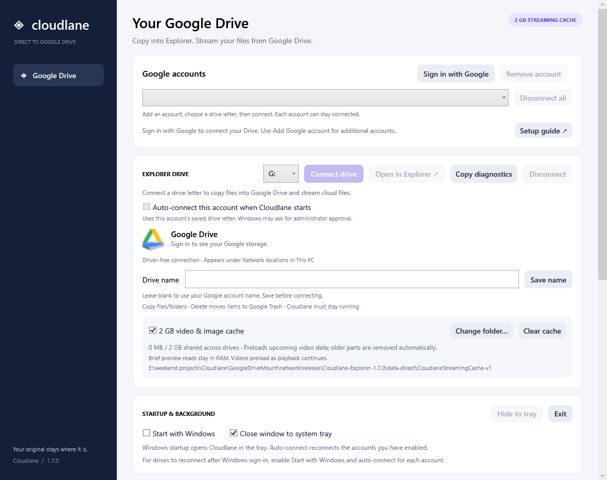

01 / OPEN & STREAM
Press play.
Stay in the moment.
Open cloud photos and videos in your Windows apps. An optional 2 GB rolling cache helps keep playback moving.
THE LONG WAY HOME
02:14
08:30⛶
Bring Google Drive into File Explorer. Open your files, stream your videos and copy to the cloud. All from a place you already know.
Familiar by design.
Your everyday Windows apps.
Made for the moment.
Stream without a full Drive sync.
Room for every account.
A drive letter for each Google Drive.
The cloud shouldn’t feel like somewhere else.
Keep the files you love in your usual flow.
Open cloud photos and videos in your Windows apps. An optional 2 GB rolling cache helps keep playback moving.
Personal projects. Work files. Keep multiple Google accounts connected, each with its own drive letter and name.
Copy files and folders into your mapped drive from Explorer. Uploads go straight to Google Drive, without an extra local staging copy.
Give each drive a name. Choose which accounts reconnect. Keep Cloudlane quietly running in your system tray.

Cloudlane app · Interface previewDownload the Windows installer and follow the setup. No extra driver or separate runtime to install.
Import your own Desktop OAuth JSON, then sign in with Google. Our setup guide walks you through each step.
Choose an available letter and connect. Approve Windows’ administrator prompt, then open File Explorer.
Your Google project. Your connection. This open-source release uses your own OAuth client. Follow the setup guide before your first sign-in.
Setup guide ↗A Windows 11 PC running 24H2 or newer (build 26100+), with an x64 processor and internet access. Connecting a drive needs administrator approval using the same Windows account. The drive appears under Network locations in File Explorer.
Yes. There’s no Cloudlane subscription or paid filesystem driver. The app is MIT licensed, and the matching source is downloadable. Your normal Google storage limits and your own project’s API quotas and policies still apply.
No full Drive sync is required. Browsing lists your files, while opening files requests their content. Video and image streaming can use an optional shared 2 GB rolling cache. Windows and other apps may also request thumbnails or file previews.
Yes. Add multiple accounts, give each its own available drive letter and name, and keep them connected together. You can choose auto-connect separately for each account.
In your own Google project, open Google Auth Platform → Audience → Test users and add the exact email you use. Testing authorizations for Drive normally expire after seven days. Google verification, organization policies and API quotas still apply to your project.
It needs to keep running while your drives are connected. Close the window to keep it running in the system tray. Enable Start with Windows and your accounts’ auto-connect options if you want them to reconnect at startup. Windows approval may still appear.
Cloudlane talks to Google Drive directly from your PC. Each user signs into their own account, and saved tokens use Windows account encryption. Cached media stays in the local folder you choose. This landing page doesn’t ask for your Google password or connect to your Drive.
Free & open source · v1.7.3 · 70 MB